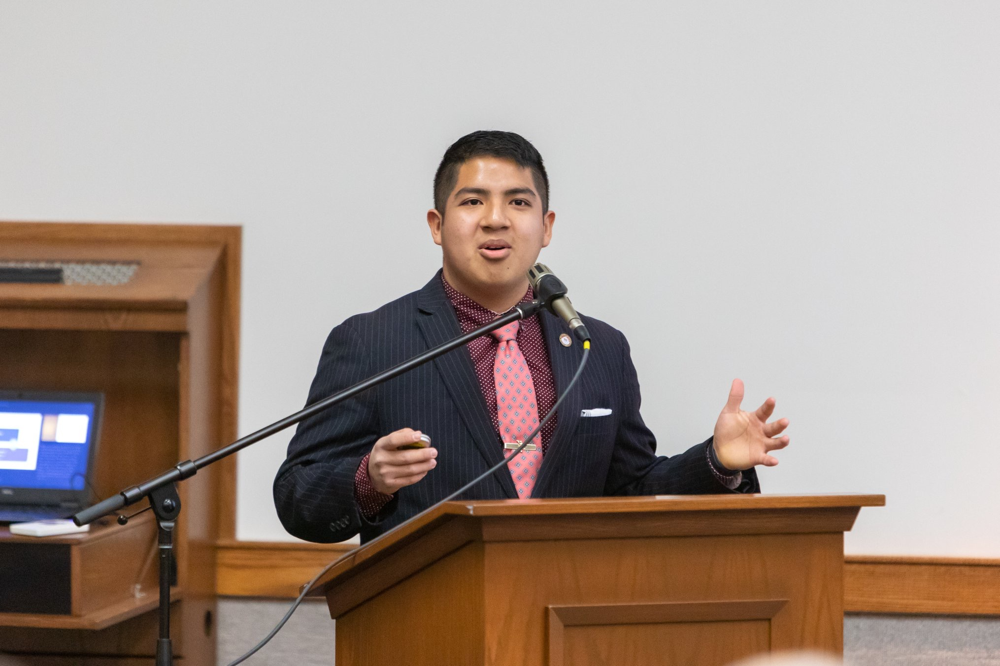
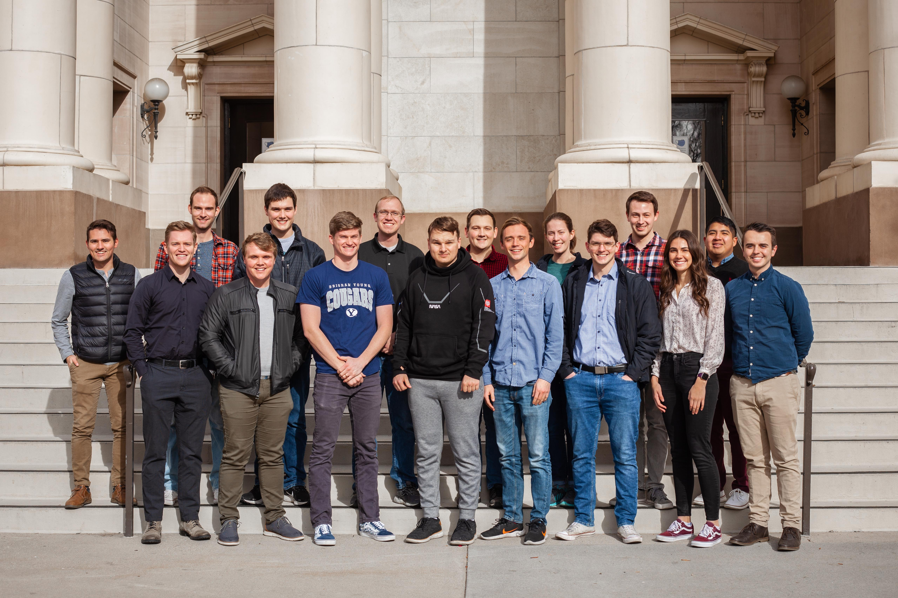

About Me
"Mathematics is the most beautiful and most powerful creation of the human spirit," Stefan Banach once beautifully stated. As a young boy, I was fascinated as I learned about mathematics and its application in the world. It soon became something that I yearned for as it helped me analyze solve problems with precision, rigor, and critical thinking.
I am Oscar J. Escobar and am an applied mathematician. But, I also like to think as myself as an avid computer scientist and coder. I love football (i.e. soccer) and am a huge fan of Real Madrid. In my spare time, I like to cook, watch series and movies, play the piano and guitar, and learn new things.
I have found a true calling in taking complex real problems and turning them into bite-size pieces of math. I then bridge the gaps of what is yet unknown with a precise solution and quantitative analysis. This has often helped me earn the praise of being an innovator by using math to model the world and find solutions. At BYU and across my internships, I have further taken interests in developing code solutions.
My passion for solving real world problems has led me across several industries and research projects, two of which I was able to publish. My research has been in the field of engineering in the computational fluid dynamics, wildfire model optimization, and deep RL. For industry, I have leveraged mathematics to employ statistical analysis and machine learning to asses or build models in the Natural Language Processing area as well as image text extraction. I have also indulged in building python frontend code to create a report-automation-tool that displays to a HTML page as well as have worked in LLMs.You can checkout my current and past work/project results here.
Skills
Here is an overview of my skills. Feel free to also look at my résumé.- Python, SQL, C++
- Flask (Web App) & HTML
- LLM/AI: OpenAI API, Ollama, RAG, Agentic, Image, Audio
- ML: PyTorch, Keras, Scikit Learn, Optuna, MLOps (AWS)
- Optimal Control Theory: PMP, HJB, LQR & LQG
- Data Assimilation: Kalman, Particle Filters, EnKF
- Time Series Analysis & HMMs (statsmodels & hmmlearn)
- Bayesian Statistics & Probability Theory & MCMC
Education
I am currently pursuing a Bachelor's of Science in Applied and Computational Mathematics (ACME) from Brigham Young University.
My anticipated graduation date is in Dec 2025.
Some of the important and relevant coursework I have taken so far is:
- Agentic Applications
- MLOps & LLMOps
- Mathematics of Deep Learning
- Data Assimilation
- NLP
- Modeling with Data & Uncertainty
- Optimal Control
- Deep Learning
- Optimization
- Modeling with Dynamics (ODE & PDE)
Recent Professional Experience
You can find a full list of my other internships on LinkedIn. You can checkout my repo where I host my projects.
AI Frontend Engineer & App Developer | June 2024-Aug 2024
I returned once more to Wells Fargo's summer internship in the Minneapolis office. This time I found myself working under two teams: VRT; and the intelligent Monitoring & Automation Team (iMAT).
I networked with Sam Modde (iMAT manager) to be able to join his team as the team was working on implementing AI for internal use for report automation. I worked in a project, along side a fellow intern, that would automate the creation of a process review report that would normally take about 9.7 hrs for a person to do due to its many a workflow steps. The tool is meant to help a team of 24 reviewers handle the various documents, sites, and repos they have to access in order to validate information. My part came in at the end where after the document, site, and repo data was swept and stored in a master xlsx file my work would have to read and display that to a user friendly HTML report. I delivered a python module that can dynamically infer workflow steps as well as dynamically store the data so that it can be read by an HTML script (using jinja2) to create the report. The HTML report had user friendly dropdowns, text entry area, company color & logo scheme, as well as the ability to save current progress. Moreover, I also created the python module so that it can generate an off-ramp version of the report for those process reviews that are not automated or where the tool breaksdown. This code was sent to testing around the end of July and is set to be rolled into phase 1 production by the middle of August.
With the creation of the report, Sam and the rest of the team were very impressed and delighted by the functionality of the report. Since the tool also created various other reports (e.g. error logging, report on which processes were automated ) and we created a good py module, Sam asked Ifrah and I to draft up a SQL schema that could be used to store all the data found in the various reports created by the tool. We delivered and pitched a 5 table schema along a system architecture for handling data upload and deletion to the table that followed company data policies. The team is currently looking at implementing our idea using the python skeleton we left (using teradatasql module).
ML Intern Developer | June 2024-Aug 2024
I was able to work at Wells Fargo under the Analytics & Data Undergraduate Program (ADUP) in Minneapolis. ADUP gave me the opportunity to choose the sorts of projects I wanted to work in, and having had experience in ML from my previous role, I chose ML modeling and data analysis. Given the choices, I chose to go into the Advanced Data Analytics & Solutions team under Andy Chandler to work more on the NLP opportunities his team presented.
The Advanced Data Analytics team was looking at data from previous Wells Fargo projects. This data contained information about timelines, next steps, people on the team, description of the project and scope of it, as well as other information like dollar amounts and people who get covered by the project. But, the data was very messy and inconsistent as measurements, collection, and organization is concerned. Our main task was to answer 2 questions: 1) Does the given dataset possess anything that is predictive for assessing project risks and timelines? 2) Given the assumption of 1, can ML or NLP help assess project risks and timelines?
As per the results, in answer to question 1, I was able to find predictive power within the text description of the business projects, particularly in the risk descriptions of the project. More often than not, the risk description was pretty predictive in helping give a binary classification if a given project can meet Wells Fargo's established timelines (an anwer to 2). I was able to give the team a trained NLP text classification model that employs an SVC classifier. Due to the volatility in the data, the classifier had a performance range of 63-72% classification accuracy for binary timeline prediction. But, the model did better, with a performance range of 73-79% classification, in classifying projects into the different Wells Fargo risk tiers. My code also took care of the text cleaning and standardization where I eliminated stop words and use 2-grams.
My Work
You can checkout my repo where I host my projects. I give a more detailed explanation of my current research and projects here. In my repo, I host more of my code and results.Research
Deep Learning Applications in Wildfire Modeling; BYU - Missoula Fire Lab (Sept 2024-Present)
I work with Dr. Barker from the mathematics department in conjunction to his work with Missoula Fire Lab. Wind is a big principal component of wildfires, but it is hard to model properly. WindNinja is a software that uses two different models that can solve the wildfire PDEs (mainly a diffusion-convection PDE) in order to make a wind profile. However, one method is really fast but with less accuracy and lower geography resolution, whereas the other is more accurate and with higher geography resolution but very slow. The main goal of the project is to improve the temporal complexity for solving wildfire PDEs through the use of ML, mainly deep learning applications. We are trying to compare this to Newton's method for root finding for a discretized PDE (i.e. PDE discreteized with a finite difference method (FDM)).
I am employing techniques like MCMC and finite differences to be able to solve the nonlinear diffusion-convection Burgers' one-dimensional equation. The first part is to get a converging Newton's method that can solve the nonlinear FD equation, hence the MCMC part to get a good estimate of the root. With this, I am hoping to then compute the inverse of the Jacobian of the nonlinear FD to be able to find the root. I am comparing this method to a scipy-solver that I coded that performs FD on the PDE. I used the Crank-Nicolson (CN) method for my FD.
Once I have the Newton's method, I will be employing a deep neural network to estimate the inverse of the Jacobian. My work idea is based on the paper that estimates the Jacobian of a multivariate function with only samples of the inputs and the function evaluated at those inputs. I am also trying developing a hybrid approach using a physics informed neural network (PINN) that learns to Burgers' equation using deep FDM (DFDM). This hybrid method first uses a convolutional neural network (CNN) to better the CN-FDM in its error terms. We then use the learned DFDM in replacement of the PDE that the PINN would normally take. For all of this, I am developing the MLOps architecture using weights & biases and DVC.
Optimal Control in Mathematical Oncology; (Sept 2024 - April 2024)
As part of my Modeling with Dynamics class, we have to perform a small research project where we get to select a specific system or world phenomena we would like to explore and model. My team chose to model Breast Cancer growth under the effects immunological response and chemotherapy. We first focused on finding an ODE model that incorporated tumor-immune-cell interactions modeled by Michaelis Menten Kinetics (MMK). I did the main research for both models and came across Gompertzian growth as well as an exponential decay of the chemo (mainly by reading DePillis).
The next phase was to pick a specific cancer, invasive ductal carcinoma (IDC), and modeled that with a specific treatment. We opted for the Adriamycin-Cytoxan (AC) treatment which comprises doxorubicin and cyclophosphamide. I did the main application of optimal control theory in order to find an optimal continuous dosage. I leveraged Pontryagin's Maximum Principle and used an iterative method to numerically solve for the continuous dosage. We were able to find an optimal dose that seems aligned with existing research of bang-bang solutions. However, our in-silico results show a continual decay of epithelial cells which made us question the accuracy of our model (at least in the chemo effects portion). If you would like to see our paper, please contact me.
(Published) Nozzle Design using CFD; BYU Rocketry Club-Hybrid Rocket Research Team (Sep 2021-Aug 2023)
I joined the BYU Rocketry Club: Hybrid Rocket Research Team back in the fall of 2021. We were the recipients of a grant from the Utah-NASA Consortium of about $8,000 that was to be used to generate research for paraffin LOX hybrid fuel. We created a design for a 12ft rocket that would reach a target of 10,000 ft and have a maiden voyage in the summer of 2022. We (see below) were able to present our findings at the Utah-NASA Consortium 2022 Spring Conference and publish it in the Utah-NASA Consortium webpage .

I was working within the propulsion subteam to create the LOX dome, combustion chamber, fuel grain, and nozzle. I was tasked with implementing a design for the nozzle configurations that would enable us to reach a target exit mach number of 3.1. I studied the works of Gas Dynamics by Zucrow and learned more about the method characteristics employed for nozzle design. I was able to implement a Python3 script that would similate axisymmetric irrotational compressible flow given a throat area, radius of curvarture, desired exit mach number, and specific heat of the fluid. The script would output two solutions: 1. Rao nozzle in 3D (using Matplotlib) and 2. a txt, csv, excel file of the nozzle characteristic points that would then be used to create a CAD model in SolidWorks. I was later able to implement numerical methods for the transonic region analysis. The main goal of this was to better estimate the mach number achieved by the nozzle as well as better configure the mesh of the method of characteristics.